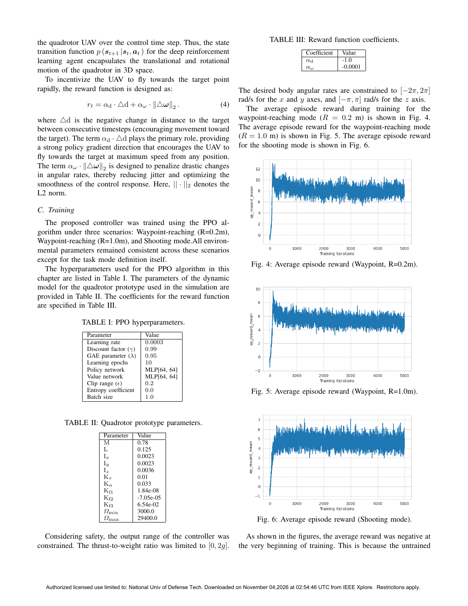

"射击模式"：把"到达目标点"改成"穿过目标平面"——一个任务定义上的小改动，治好 DRL 拦截的末端减速病
| 作者 | Xiaoxin Li（李晓鑫，第一作者）、Zhihong Liu（刘志宏，通讯）、Guanzheng Wang（王冠政，第三作者）、Tianyou Liu（刘天佑） |
| 单位 | 国防科技大学 智能科学学院（长沙） |
| 会议 | 2025 4th International Conference on Artificial Intelligence, Human-Computer Interaction and Robotics（AIHCIR 2025），IEEE；DOI: 10.1109/AIHCIR67580.2025.11404803；6 页短文 |
| 一句话 | 用"距离减少量"做奖励的 DRL 拦截策略会学会在末端减速——因为冲过去反而被扣分（overshoot penalty effect）。本文把任务从"进入目标半径"改成"穿透目标平面"，回合在穿面瞬间结束，于是"越接近越容易被罚"的激励被彻底消除；PPO 直接输出体轴角速率 + 归一化推力，实现 15 m/s、0.2 m 精度的高速拦截。 |
| 创新点 | 做法 | 解决什么 |
|---|---|---|
| ① 提出并命名 overshoot penalty effect | 系统对比 waypoint-reaching（R=0.2 m / R=1.0 m）与 shooting mode 三种任务 | 把"DRL 拦截末端减速"从现象上升为可复现、可解释的机制 |
| ② Shooting mode 任务定义 | 构造过目标且垂直于初始连线的虚拟目标平面；穿面即成功并终止回合 | 消除 overshoot 惩罚，鼓励持续加速到撞击 |
| ③ 端到端体角速率 + 推力控制 | PPO 输出 $[\omega_x^{des},\omega_y^{des},\omega_z^{des},c^{des}]$，P 控制器跟踪角速率 | 去掉位置/速度环中间层，直接进入机体动力学层面，保留高机动性 |
| ④ 量化"半径放宽"的副作用 | R 从 0.2 → 1.0 m，减速幅度明显缓解但精度下降 | 证明"放宽判定半径"不是解——它与"精确拦截"的根本目标冲突 |
flowchart TB
subgraph W["Waypoint-reaching 模式"]
W1["随机初始化 UAV"] --> W2["奖励 = αd·Δd + αω·‖Δω‖²"]
W2 --> W3{"d 小于 R ?"}
W3 -->|"是"| W4["成功，回合终止"]
W3 -->|"否"| W5{"冲过目标？
Δd 小于 0"}
W5 -->|"是"| W6["负奖励 → 策略学会
末端减速"]
W5 -->|"否"| W2
end
subgraph S["Shooting 模式（本文）"]
S1["随机初始化 UAV
+ 构造过目标的虚拟平面"] --> S2["奖励 = αd·Δd + αω·‖Δω‖²
（同式，未改）"]
S2 --> S3{"穿透平面？"}
S3 -->|"是"| S4["成功，立即终止
→ 不存在 overshoot 惩罚"]
S3 -->|"否"| S2
end
classDef w fill:#ffe4e6,stroke:#e11d48,color:#7f1d1d
classDef s fill:#ecfdf5,stroke:#10b981,color:#047857
class W1,W2,W3,W4,W5,W6 w
class S1,S2,S3,S4 s
flowchart LR
ST["状态 s_t（12 维）
p, v, 欧拉角, 体角速率"] --> DF["Δs_t = s_target − s_t"]
DF --> NET["FCNN 2×64 + tanh
π_θ(a∣Δs)"]
NET --> ACT["a = [ωx, ωy, ωz, c]
角速率 ±2π/±π · 推力 [0,2g]"]
ACT --> P["P 控制器
跟踪期望体角速率"]
P --> DYN["旋翼 6-DOF 数值积分
（按控制步长）"]
DYN --> ST
DYN --> R["r = αd·Δd + αω·‖Δω‖²
αd=−1.0, αω=−1e−4"]
R -.-> NET
classDef s fill:#e8f0fe,stroke:#3b82f6,color:#1d4ed8
classDef n fill:#f5f3ff,stroke:#8b5cf6,color:#6d28d9
classDef d fill:#fef7ed,stroke:#f59e0b,color:#92400e
class ST,DF,N,ACT s
class NET,ACT n
class P,DYN,R d
| 要素 | 内容 |
|---|---|
| 三种任务 | Waypoint R=0.2 m；Waypoint R=1.0 m；Shooting mode |
| 约束 | $\omega_{x,y}\in[-2\pi,2\pi]$ rad/s，$\omega_z\in[-\pi,\pi]$ rad/s；推力/重力比限制在 $[0,2g]$ |
| 指标 | 末端速度、脱靶量（精度）、姿态/角速率曲线平滑性 |
| 结果 | Shooting 模式：以 15 m/s 拦截，有效半径 0.2 m；Waypoint R=0.2 m 在接近目标时速度"降到接近零" |
| 参数 | 取值 | 备注 |
|---|---|---|
| 学习率 | 3e-4 | PPO 常用默认值 |
| 折扣因子 $\gamma$ / GAE $\lambda$ | 0.99 / 0.95 | — |
| 学习轮数 / clip range | 10 / 0.2 | — |
| 策略/价值网络 | MLP[64, 64] | 极小网络——任务维度低（12→4） |
| 熵系数 | 0.0 | 不额外鼓励探索 |
| Batch size | 1.0（原文如此） | ⚠ 疑为排版/归一化笔误，正常应为 103–104 量级 |
| 训练规模 | 5000 次迭代 | 取自 Fig.4–6 的横轴 |
| 参数 | 值 | 物理含义 |
|---|---|---|
| $M$（kg） | 0.78 | 质量——中型四旋翼 |
| $L$（m） | 0.125 | 轴距/力臂 |
| $I_x,I_y,I_z$（kg·m²） | 0.0023, 0.0023, 0.0036 | 三轴转动惯量 |
| $K_\tau,K_\alpha$ | 0.01, 0.033 | 反扭矩 / 阻力系数 |
| $K_{f1},K_{f2},K_{f3}$ | 1.84e-8, −7.05e-5, 6.54e-2 | 推力系数拟合（含二次项） |
| $\Omega_{min},\Omega_{max}$（rpm） | 3000, 29400 | 电机转速范围 |
这组参数足以重建一个 6-DOF 旋翼模型——但论文没有说这些参数喂给了哪个仿真器。详见第 7 节。
这篇是他六篇里对仿真器披露最少的一篇，值得单独"侦查"一遍。
| 原文表述 | 能推出什么 |
|---|---|
| "A Proportional (P) controller is implemented in the simulation environment to track the desired body rates." | 有一个自建/自配的仿真环境，其执行层是 P 控制器（不是 PX4 SITL） |
| "The new state $s_{t+1}$ is obtained by numerically integrating the dynamics of the quadrotor over the control time step." | 仿真器提供的是"给定体角速率与推力 → 数值积分 6-DOF"的动力学，不是完整的飞控栈 |
| "The simulation setup (including hardware, initialization, and parameters) was identical to the training environment." | 训练与验证同环境（同 6203 的问题） |
| Table II 给出 $M,L,I,K_\tau,K_\alpha,K_{f1..3},\Omega_{min/max}$ | 有一个完整的旋翼动力学子模型，参数看起来来自某个特定机型（0.78 kg / 轴距 0.25 m 级） |
| "extensive simulations"、"simulation experiments" | 没有任何仿真器名称、版本、渲染、传感器、时间步长的信息 |
| 问题 | 说明 | 影响 |
|---|---|---|
| ① 仿真器完全不可复现 | 无名称、无版本、无代码、无时间步长、无传感器 | ★★★★★ 别人无法复现"15 m/s / 0.2 m"这个结果 |
| ② 无扰动、无噪声 | 无风、无模型误差、无状态估计误差；状态直接取自积分真值 | ★★★★ 拦截任务对末端毫米级精度极其敏感，仿真真值下的 0.2 m 不代表真机 0.2 m |
| ③ 目标静止 | "target UAV"在 Fig.10 中被撞，但训练时目标点是固定的；没有机动目标、没有博弈 | ★★★★★ 这叫"拦截一个不动的点"，与"空中对抗"差得很远 |
| ④ 训练与验证同环境 | 同一随机初始化分布、同一参数 | ★★★ 无法评估泛化 |
| ⑤ 超参表疑似笔误 | Batch size = 1.0 | ★★ 复现者会卡在这里；建议以作者代码为准 |

| 图 | 曲线形状 | 解读 |
|---|---|---|
| Fig.4 Waypoint R=0.2 m | 先升到约 10–12，随后持续下降到约 7–8 | 不是"训练不稳定"，而是策略在主动收敛到"减速"行为——因为冲过去会被罚。这是 overshoot penalty 的指纹 |
| Fig.5 Waypoint R=1.0 m | 类似先升后降，但下降幅度小，稳定在约 6 | 半径放宽 → 冲过的概率降低 → 惩罚减弱 → 减速缓解。但精度损失（R=1 m）不可接受 |
| Fig.6 Shooting | 单调上升并稳定在约 6–7（无后期下降） | 激励反转被消除，策略不再有"减速"的动机 |
| 维度 | 本篇 | 对比 |
|---|---|---|
| 仿真器披露 | 完全未披露（六篇中最差） | 6201 开源代码、6202 明确双栈、6206 真机验证 |
| 贡献类型 | 任务定义（零代码创新） | 6201 控制层级 / 6202 观测表示 / 6205 分层架构 |
| 可复现性 | 低 | 6201 最高（GitHub 开源 + 超参齐全） |
| 启发性 | 高（"终点即终止"原则） | — |
读这篇的正确姿势：不要学它的实验，要学它的思路。overshoot penalty effect 是一个几乎每个做 DRL 到达/拦截任务的人都会踩的坑，而它的解法只需要改三行代码。